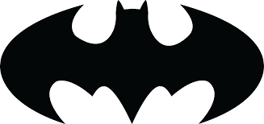

Batman
O Batman (inicialmente chamado o Bat-Man) também conhecido pelas alcunhas Homem-Morcego, Cavaleiro das Trevas, Cruzado Encapuzado, Maior Detetive do Mundo,[7] é um personagem fictício e super-herói encapuçado da editora norte-americana DC Comics, criado pelo desenhista Bob Kane e pelo escritor Bill Finger, aparecendo pela primeira vez na história em quadrinhos Detective Comics#27 (maio de 1939) com o nome "o Bat-Man".
